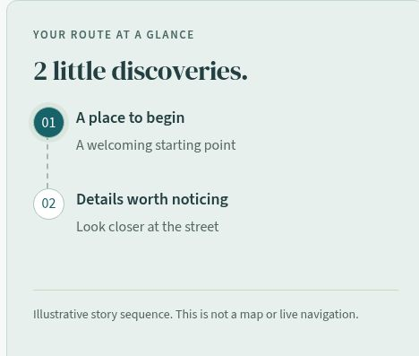
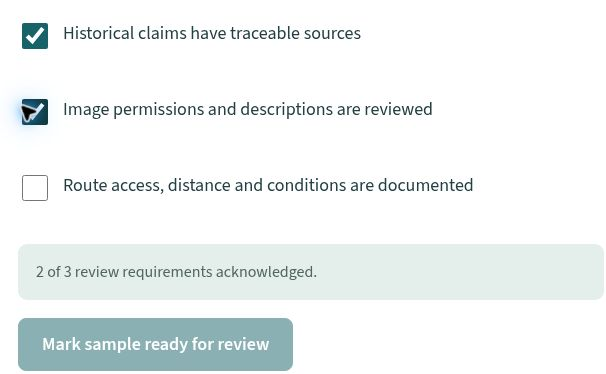

Design & implementation
PsychicTally
I designed and built this independent community application. The case shows how permissions affect reviews and moderation. A separate illustrative report queue lets you inspect a moderator’s decision.
Jocelyn Martinez · Selected work
What happens when a student misses a check-in, a visitor puts their phone away, or a story is missing its source? Try the decisions I designed into each prototype.
Interaction design · University capstone origin
A missed check-in leaves an instructor with a decision.
I independently refined the correction flow so an instructor sees the current record alongside the proposed status and writes a reason before saving. Undo restores the earlier status and adds the reversal to the history.

Visitor experience · Team project origin
A walk starts when the visitor is ready.
In my independent refinement, selecting stories opens a preview of just those stops. Visitors can change the list before starting, then pause to look around and resume at the same story.

Web content · Editorial workflow prototype
I gave the editor three checks before they can mark a sample route ready for review. One asks whether historical claims have traceable sources. Unchecking it returns the route to draft, so the next editor can see that verification is still due.

Design & implementation
I designed and built this independent community application. The case shows how permissions affect reviews and moderation. A separate illustrative report queue lets you inspect a moderator’s decision.
Interface concept
Compare two scent profiles, keep their notes aligned, and recover a partly completed comparison.